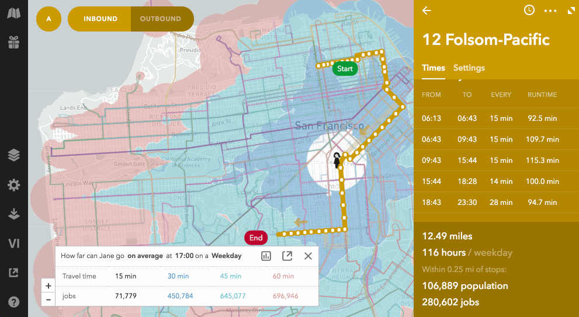

Request queuing
Remix’s products are write-heavy. In our transit planning product, users can quickly sketch out changes to bus routes, and Remix will show the resulting demographic and cost updates.
To manage these updates, we initially started with simple XHR requests and callbacks. Save something, and when that’s done, refetch the demographics and costs:
function saveBusStops(project_id, stops) {
xhr({
method: 'POST',
url: `${project_id}/bus_stops`,
json: {stops},
}).then(() =>
xhr({ url: `${project_id}/stats`})
.then((body) => updateStats(body))
);
}
This has a problem though. While drawing a new bus route, saveBusStops would get called many times in a row. So first we debounced it, every second or so:
const saveBusStops = debounce((project_id, stops) => {
xhr({
method: 'POST',
url: `${project_id}/bus_stops`,
json: {stops},
}).then(() =>
xhr({ url: `${project_id}/stats`})
.then((body) => updateStats(body))
);
}, 3000);
This worked fine for a while, but at some point we got larger customers, for which the /stats call would take several seconds to complete. This meant that sometimes the /stats call was still in progress when new bus stops were saved, which led to our core problem: overlapping API calls conflict with each other. While we’re querying the database in the /stats endpoint, the data changes because of a later /bus_stops call, which could cause the /stats endpoint to return incorrect data in the best case, or crash in the worst case (e.g. because of missing/changed ids).

We refetch all sorts of things when editing a route.
Serializable transactions
The bugs resulting from this were hard to anticipate, track down, and fix. Initially we tried to solve this using serializable database transactions for all of our endpoints, guaranteeing a sequential order to transactions. While this fixed the bugs, it had a couple of downsides:
- PostgreSQL implements serializable transactions by throwing an error if two transactions conflict. You then have to retry those transactions. If those conflicts happen a lot (which for us they did), this significantly slows down endpoints.
- Slower endpoints meant that the problem of conflicts got worse, as more endpoint calls would conflict with each other.
- Our serializable transactions would take a lot of locks. When there are too many locks, they become less granular. Often entire tables would be locked by a transaction, which would cause them to routinely conflict with other transactions.
Other problems
Besides the problems with serializable transactions, the frontend code devolved into callback hell. Instead of just having to call the /stats endpoint, we introduced many different analytical models, which the user could turn on or off at will, and which all had different dependencies on different data that could change. This became hard to maintain.
We also ended up with a lot of debounced functions, with high timeouts, in order to mitigate the issues with slow endpoints. This meant that the user would have to wait sometimes several seconds before we would even start persisting their changes, and even longer before the models would refresh. This was a terrible user experience, especially given one of our main value propositions is a snappy, live-updating product.
So we had to come up with something better.
Introducing xhrQueue
We realised that we have a particular usage pattern. Each project could only be edited by one user at the time: the author of that project. Collaboration was still possible, but done by copying projects. This worked pretty well for our users, so we decided to exploit this usage pattern to make a simple change to solve a lot of our problems.
We made one additional assumption: that each user would typically be editing each project in only one browser window, on only one computer. We could even easily enforce this (by having the browser window request a “lock” on the project), but we found that in most cases this assumption holds well enough.
With these assumptions, we can move the sequential ordering of transactions from the database to the frontend, by simply queueing up network requests. This has a few advantages:
- No need for serializable transactions on the backend, removing all the problems of having to retry transactions, not granular enough locks, and so on.
- No need for callbacks, just queue requests up in order.
- Instead of debouncing, we can instead just remove duplicate requests from the queue.
This is how code ends up looking:
function saveBusStops(project_id, stops) {
window.xhrQueue.xhr({
method: 'POST',
url: `${project_id}/bus_stops`,
json: {stops},
ignorePreviousByUrl: true,
});
window.xhrQueue.xhr({
url: `${project_id}/stats`,
ignorePreviousByUrl: true,
}, (error, response, body) => updateStats(body));
}
The ignorePreviousByUrl will remove any existing requests in the queue that have the same URL.
More benefits
Once you have the basic model of a queue for endpoint requests, you can layer some optimizations on top. One would be to specify which requests are allowed to run in parallel, since they don’t conflict with each other. For now we have a simple optimisation like that: GET requests are allowed to run in parallel, since they are assumed not to mutate data. You can override this using overrideQueueItemType: 'read' or 'write'.
Another thing you basically get for free, is a system to retry saving when the connection drops. Just retry failed items in the queue until it works again!

When the connection drops, we can easily retry until the connection comes back online, and then finish going through the queue.
Conclusion
For us, queuing up requests enabled us to build a better user experience while simultaneously resolving some tricky database issues.
We released the xhrQueue as open source. If your application has similar usage patterns, give it a try, and let us know how it works for you. We’d happily take contributions to make it better.
In the future we might want to loosen our assumptions and allow full-blown collaboration by multiple users on one project (OT!), but until then, this is a great stepping stone.